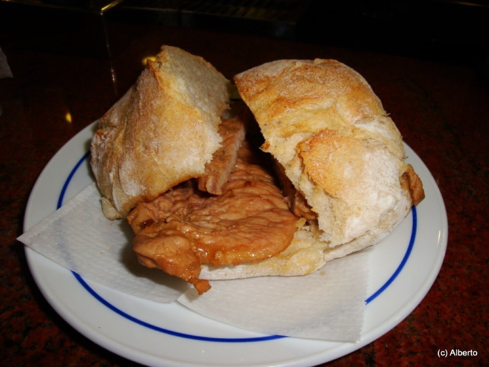
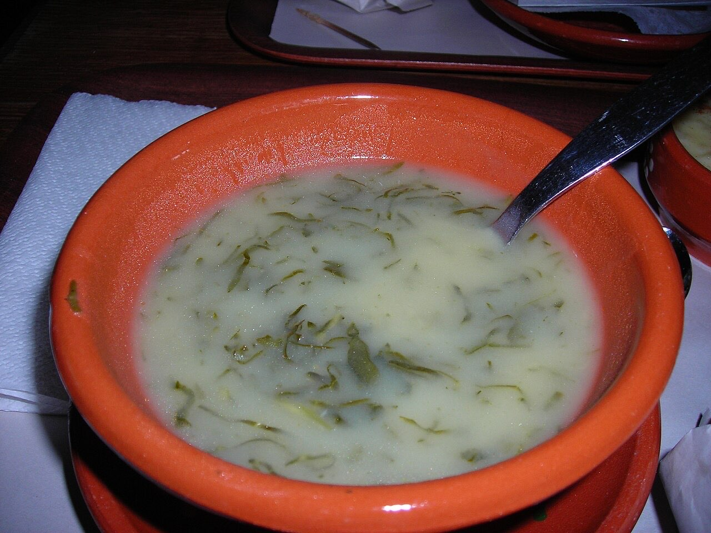

Fotografias ilustrativas — no site final usamos as vossas.
Cozinha mediterrânica e portuguesa com ingredientes locais.
Opções para escolher, sem complicações.
4,9★ em 235 avaliações no Google.
O Cajú serve brunch e cozinha mediterrânica e portuguesa saudável na Rua Francisco Agra, em Guimarães, com ingredientes locais e biológicos. É um espaço pequeno, por isso aconselhamos reservar ao fim de semana.


Fotografias ilustrativas — no site final usamos as vossas.
Pedido de reserva
Escolha o dia e a hora — o pedido chega por WhatsApp e confirmamos logo.
↑ Assim chegaria a mensagem ao vosso WhatsApp. (Nesta demonstração nada é enviado.)
Onde estamos
| Seg–Ter | Encerrado |
|---|---|
| Qua–Sex | 10:00–16:00 |
| Sáb | 11:00–16:00 |
| Dom | 10:30–16:00 |
Proposta para Cajú
Esta página foi feita de propósito para Cajú por João Machado, programador web aqui de Guimarães. Inclui:
Eu trato do alojamento e da manutenção. Sem compromisso.